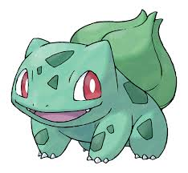

Practica de Menu Vertical
Mundo Pokemon - Kanto -
Bullbasaur
Bulbasaur es uno de los tres Pokemonos que los entrenadores novatos pueden elegir. Es el más odiado por el Pinchimono ,
debido a que es muy molesto y ruidoso.
Es cuadrúpedo y pequeño. Es de color verde, con manchas oscuras en su cuerpo. Sus ojos son grandes y rojos,
posee dos orejas puntiagudas y pequeñas, y en su lomo, posee un gran bulbo de color verde también.
Es bastante ruidoso. Cuando aparece, empieza a decir "boba" descontroladamente y de una forma muy ruidosa y molesta,
provocando que el Pinchimono le de una fuerte patada cada vez que aparece.
